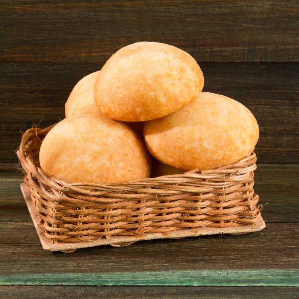

Pan de Bono

Pan de Bono is a type of bread from Colombian department of Valle del Cauca
known for its cheesy, soft texture.
Ingredients
- 2 cups of cassava starch or cassava flour
- 2 tablespoons of cornmeal
- a teaspoon of salt
- a teaspoon of baking powder
- 2 tablespoons of sugar
- 200 gr of grated cheese
- 1/2 a cup (50 gr) of grated feta cheese
- 3 tablespoons of butter
- an egg
Steps
- Preheat the oven (425ºF - 220ºC).
- Add (food processor) the cassava starch, corn flour, baking powder, sugar,
and salt.
- Proceed to mix the butter, egg, fresh cheese, and feta cheese. Then add the
milk (not all at once, little by little) until the dough is smooth.
- Now make circles with the dough, the size you want and place them in a mold
on parchment paper.
- Put the pandebonos in the oven and let them cook for 25 minutes. Check
continuously so they don't burn. The key is that they have an intense
golden color.
- Now they are ready to serve!